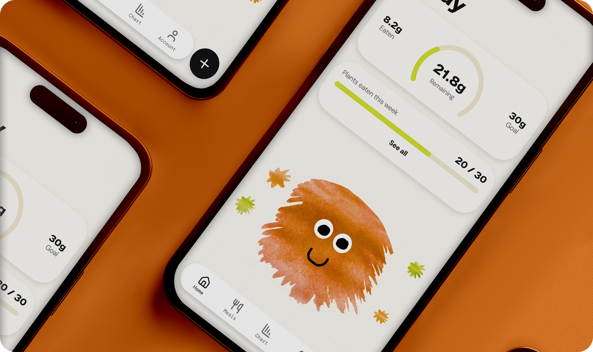
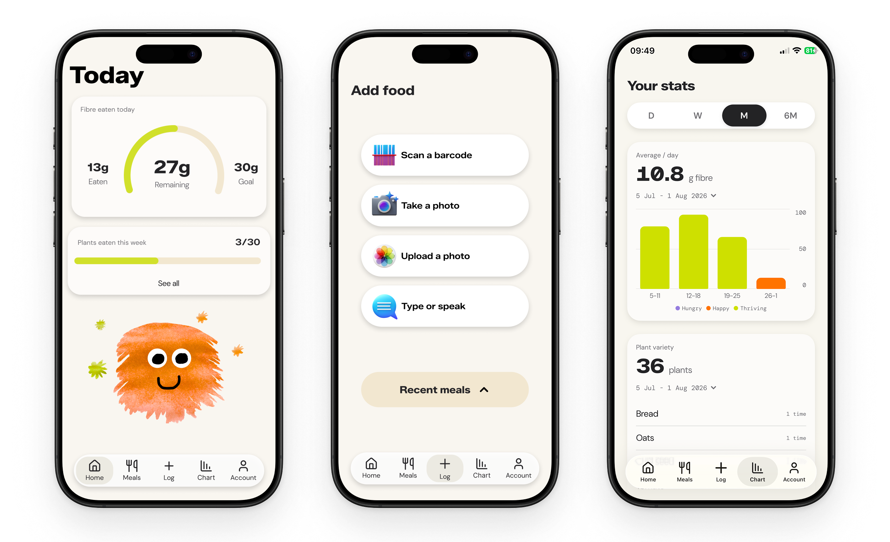

The origin
An idea that stuck.
Muchi is a health app where you “feed your gut pet” by eating more fibre and plants. The app blends real gut health science with gamification to help people build a habit that benefits their long term health in a fun way.
The idea came after listening to The Wellness Scoop podcast. They discussed treating your gut bacteria as a “pet” and feeding them fibre. I thought this could be a food tracking app, with a pet that got happier when you ate plants and fibre. The idea stuck. It felt simple, science-backed, playful, and useful.
The problem
The gap between knowing and doing.
Health-conscious people already know fibre and plant diversity matter. What's missing isn't information, it's a reason to act on it daily.
The existing market splits into two extremes: clinical, expensive subscription science (Zoe, from £9.99/month with optional £149 stool tests) or generic calorie counters that treat every food as a number to be managed (MyFitnessPal, Lifesum).
I wanted something in the middle that made eating more plants feel worth doing, with gamification alongside the desire to be healthy. Feed Muchi plants and fibre, and they get happier. Neglect them and they stay purple and hungry. Simple enough that you don't have to think about it, but motivating enough that you want to come back.
The decisions that shaped it
What made it onto the page, and what didn't.
UX research
I started by conducting user research on who the audience would be, so I knew who to target when it was time to validate the app.
Core user: The Curious Health Optimiser
28–45, health-conscious without being obsessive. Reads about longevity, not trying to lose weight, trying to feel good for longer. Exactly the kind of person who tells their friends about something they love.
No calories or “bad” foods
The core user has already tried a calorie-counting app and found it unsustainable. They don't need a way that scores their food or tells them what they're doing wrong, they want one that focuses on adding good things to their diet. Muchi tracks only fibre and plant variety: the inputs that actually feed the gut microbiome. The framing is always about feeding something, never restricting something.
The brand is made by me
I chose to hand-paint the characters, with texture that was playful but still resonated with adults. I drew the logo myself too.
What I chose not to build
Every feature that didn't make it into Muchi was a deliberate cut. No weight tracking, no calorie targets, no food scores, no social comparison, no guilt-based notifications. Each one was considered and rejected because they would have pulled the app toward diet culture and away from the people it's actually for.

The AI in the room with me
Built with AI, designed by me.
For this project every step has been intentional and considered. I wanted to continue learning to build with AI tools, while also creating and designing it myself, and I wanted full control of the tech and design.
The entire app is built using Cursor with Claude as a collaborator. I used the Figma Console MCP to keep design tokens and code in sync, and re-built screens from the app into Figma when I didn't have them in my design system.
I did all of the design: creating components in Figma, then prompting new features into the app with my tokens. When I wasn't happy with what Cursor created, I brought it back into Figma, redesigned, and re-prompted.
MCPs used: Figma Console MCP for design-to-code alignment, Mobbin MCP for onboarding research, Browser for local UI checks, and PostHog for analytics setup, so the agent could see design, competitors, the running app, and measurement in one workflow.
AI-Assisted Design Workflow
Concept
Brand & Illustration
UX Design
Build
Design/Build loop
Measurement & Launch
Idea, research, audience definition, brand values, positioning
Hand-painted watercolour characters, colour palette, typography, all visual identity
All screens designed in Figma, component library, design tokens, design decisions
Prompts written for every feature, all product decisions. Asked agents to review code
Reviews output in browser, pulls into Figma when unhappy with the flow or design, redesigns, re-prompts
Analytics strategy, event definitions, test plan, user recruitment, marketing
Competitor analysis, naming exploration, copy iteration
Mobbin MCP for competitor UX research, Figma MCP to sync tokens to code
Cursor + Claude created React, TypeScript, Supabase, routing, animations, API integrations, code review
Browser MCP to check live UI, Figma Console MCP to read updated tokens, rebuilds to match
PostHog MCP setup, tracking calls implemented in code
How it works
Three ways to log. One habit to keep.
For food logging, users have three ways in: snap a photo, speak a description, or scan a barcode.
Photo recognition uses Google Gemini 2.5 Flash via OpenRouter to identify meal contents and estimate fibre per ingredient. Voice input uses Whisper for hands-free meal description. Barcode scanning pulls from Open Food Facts for packaged UK products.
Behind the search, a three-layer system combines natural-language AI estimation, UK-filtered Open Food Facts, and USDA FoodData Central as a fallback for generic whole foods, so whether someone types “Weetabix” or “oats”, they get a relevant result.
Stack: React 18, TypeScript, and Vite, with React Router for navigation and Framer Motion for transitions and character animation. Supabase handles authentication, Postgres-backed meal logs with row-level security, and private storage for meal photos. Deployed on Cloudflare Pages, with PostHog for product analytics. Now available for iOS.
Current status
—
Meals logged
—
Weekly active users
Live
In the App Store